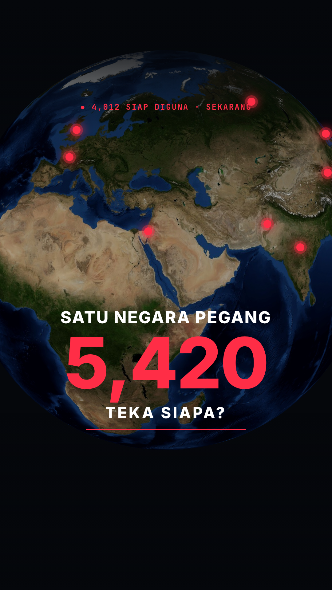
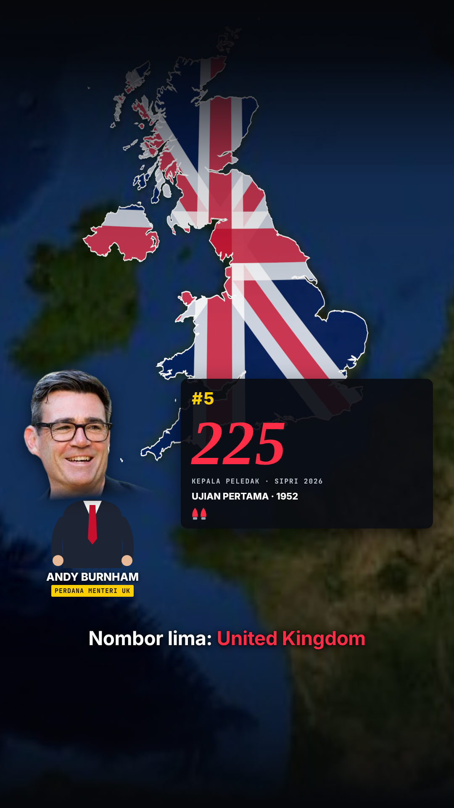
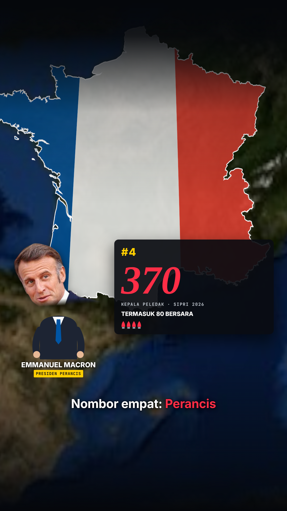
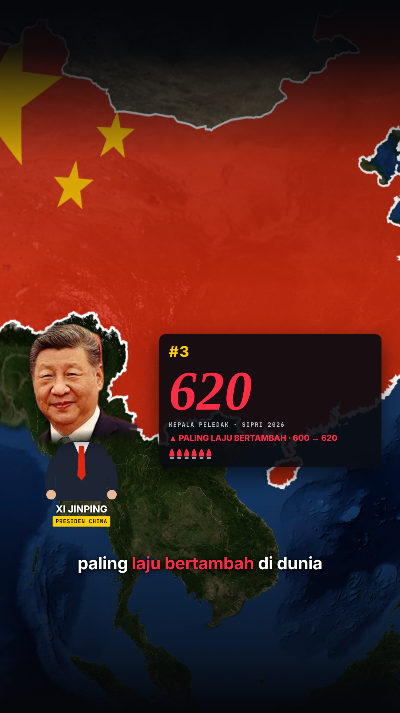
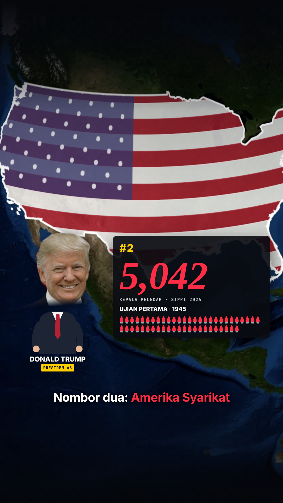
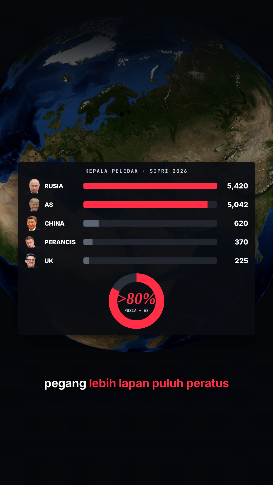
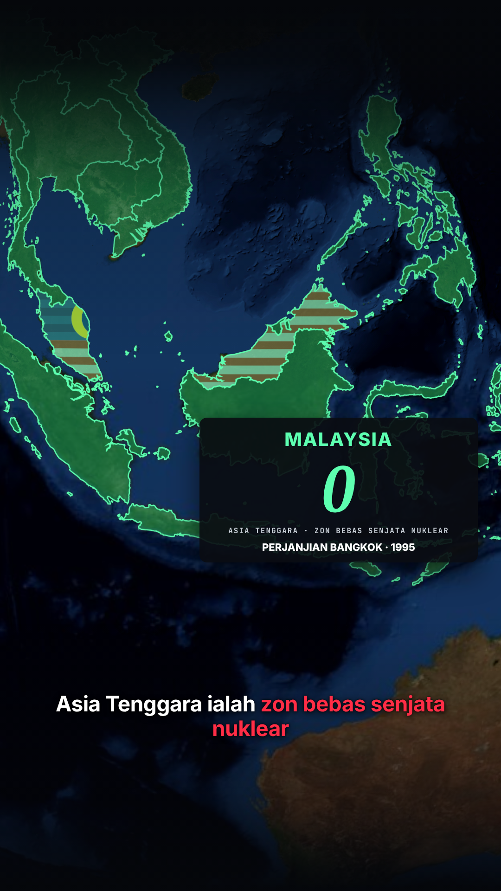
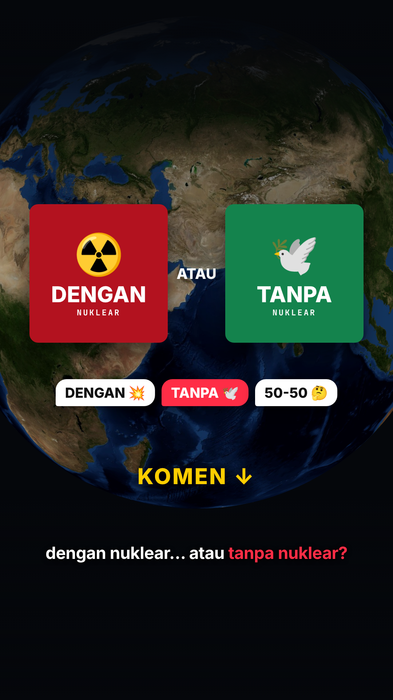

GAYA MAP ANIMATION (fakta, kiraan 5 → 1) · 1080×1920 · ~50 s · bobblehead dari gambar pemimpin (sama layanan untuk semua) · subtitle di jalur bawah · data: SIPRI Yearbook 2026 Jadual 8A.1

01 · 0:00
Hook
"Saat ni, lebih empat ribu senjata nuklear dah siap dipasang… satu negara je pegang lima ribu empat ratus. Teka siapa?"
Glob berputar, 9 titik merah berdenyut, "4,012 SIAP DIGUNA". Tajuk SATU NEGARA PEGANG 5,420 · TEKA SIAPA?

02 · 0:07
#5 UK
"Nombor lima: United Kingdom. Dua ratus dua puluh lima."
Terbang ke UK, Union Jack isi negara. Bobblehead Andy Burnham jatuh masuk & bergoyang. Kad #5 · 225, ikon peledak (1 = 100).

03 · 0:11
#4 Perancis
"Nombor empat: Perancis. Tiga ratus tujuh puluh."
Terbang ke Perancis, tiga warna. Bobblehead Macron. #4 · 370, nota "termasuk 80 bersara".

04 · 0:15
#3 China
"Nombor tiga: China. Enam ratus dua puluh. Paling laju bertambah."
China merah + bintang. Bobblehead Xi Jinping. #3 · 620, anak panah naik "600 → 620".

05 · 0:21
#2 AS
"Nombor dua: Amerika Syarikat. Lima ribu empat puluh dua."
"Dan nombor satu: Rusia. Lima ribu empat ratus dua puluh."
Zoom out besar ke Rusia, tiga warna. Bobblehead Putin. #1 · 5,420 👑, tint merah.

07 · 0:30
83%
"Rusia dan Amerika je, pegang lebih 80% senjata nuklear dunia."
Carta bar 5 negara (kepala kecil di tepi), AS + Rusia menyala merah, donut >80%.

08 · 0:35
Malaysia: 0
"Malaysia pula? Kosong. Asia Tenggara zon bebas senjata nuklear sejak 1995."
Terbang ke Asia Tenggara, 10 negara menyala hijau, Malaysia bendera. Kad 0, "PERJANJIAN BANGKOK · 1995".

09 · 0:43
Komen!
"Dunia lebih selamat dengan nuklear… atau tanpa? Komen kat bawah."
Dua butang DENGAN vs TANPA, gelembung komen, KOMEN ↓, lepas tu outro.
Caption BAWAH, perkataan demi perkataan · zoom punch pada kata kunci · bobblehead bergoyang bila kamera sampai · carta bar membina · penutup ajak komen · satu shot kamera berterusan